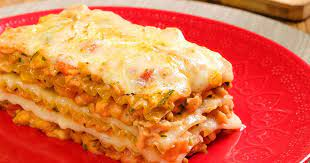

Lasanha de frango c/ queijo

Ingredientes
- 1 peito de frango
- 500 g de queijo muçarela fatiado
- 400 g de presunto fatiado
- 1 pacote médio de massa para lasanha (direto ao forno, sem cozimento lirévio)
- 1 pote de requeijão cremoso
- 2 caldos de galinha (ou tempero completo sabor galinha)
- 2 copos de leite
- 1 caixa de creme de leite
- 2 colheres de farinha
- 3 colheres de manteiga
- 1 cebola média
Modo de preparação
Molho
- Em uma panela, faça um creme homogêneo com as 2 colheres de farinha e 2 colheres de manteiga (reserve 1 colher de manteiga).
- Acrescente o leite, 1 caldo de galinha e mexa constantemente.
- Retire do fogo e acrescente o creme de leite, reserve.
Frango
- Cozinhe o peito de frango em água (sem óleo), após cozido, desfie-o.
- pique a cebola em pedaços pequenos, coloque em uma panela e doure com a manteiga.
- Acrescente o frango e o caldo de galinha, mexa sempre até o frango ficar totalmente dourado.
Montagem
- Em um refratário, coloque 2 conchas de molho.
- Faça a base com massa de lasanha, cubra com 1 camada de presunto, 1 de queijo e 1 de frango (nessa ordem).
- Sobre o frango, coloque 1 camada de requeijão e 2 conchas de molho.
- Cubra o requeijão com 1 camada de presunto, 1 camada de queijo e 1 camada de massa, coloque molho.
- Repita esse processo até faltar cerca de 2,5 cm para chegar na borda do refratário.
- para finalizar, cubra a lasanha com muito queijo, requeijão e molho.
- Asse por, aproximadamente, 20 minutos em fogo baixo